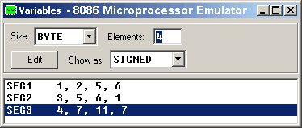
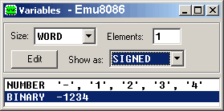
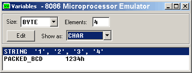
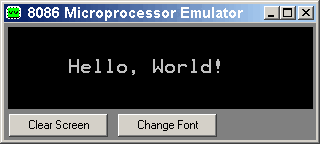

; Assembly Language Source Codes
Assembler Source Code for emu8086 microprocessor emulator and compatible assemblers (16 bit)
To copy codes to a text editor just press Ctrl+A (simultaneously), then press Ctrl+C and in the editor press Ctrl+V
-
bin2dec.asm
Input 8 bit binary number and print out its decimal equivalent.
-
Make your own Micro Operating System
(source with tutorial)
This is a very basic example
of a tiny OS. Your own Operating System that runs from floppy drive - easy!
-
0_sample_add_huge_numbers.asm
This example shows how to add
huge unpacked BCD numbers
-
0_sample_vga_graphics.asm
And this program draws a tiny geometrical figure in VGA mode.
-
1_sample.asm
Another "Hello World!" example
This example prints out
"HELLO WORLD!" by writing directly to the
video memory.
-
2_sample.asm
Simple Add/Subtract
-
3_sample.asm
Calculate the sum
Calculate the sum
of elements in V1 array,
store result in V2.
-
4_sample.asm
How CMP instruction sets the flags.
Usually CMP instruction
is followed by any relative
jump instruction such as:
JE, JA, JL, JAE...
It is recommended to open:
"Lexical Flag Analyzer"
and "Flags"
from emulator's "View"
menu before running
this code.
-
5_sample.asm
Octal, Binary and Decimal
See how to operate with Octal, Binary and Decimal values.
-
add_two_arrays.asm
This example calculates the sum of one array with another and saves result in third array.
In emu8086 you can see the result in "View" -> "Variables" menu. (set Elements for SEG1, SEG2 and SEG3 to 4 and
Show as "SIGNED"). Not only variables but arrays can be seen in memory. It's required to set correct data type (size) and number of elements in that array:

-
attrib.asm
Learn how to set and get file attributes, in other words how to make file Read Only or Hidden.
-
bcd_aaa.asm
BCD - AAA instruction example - bcd_aaa.asm
This example shows the use
of AAA instruction (ASCII
Adjust after Addition).
It is used to add huge
BCD numbers.
-
bcd_aas.asm
BCD - AAS instruction example - bcd_aas.asm
This is an example of AAS
instruction, it is used to
subtract huge BCD numbers.
-
bintest.asm
Bin file - bintest.asm
This is an example of how to
make a ".BIN" file.
-
calc.asm
Simple Calculator - calc.asm
This sample gets two numbers
from the user, calculates the
sum of these numbers,
and prints it out.
-
Calculator.asm
Command prompt based simple calculator (+,-,*,/) for 8086.
-
cmpsb.asm
How to use CMPSB instruction - cmpsb.asm
This sample shows how
to use CMPSB instruction
to compare strings.
-
cmpsw.asm
How to use CMPSW instruction - cmpsw.asm
This sample shows how
to use CMPSW instruction
to compare strings.
-
colors.asm
16x16 color map example - color.asm
This sample prints 16x16 color map,
it uses all possible colors.
-
convert_string_number_to_binary.asm
This program written in 8086 Assembly Language to convert string value to binary form.
When I run this program on emu8086 it proves that '-1234' is actually 0FB2Eh in hexadecimal (or binary: 1111101100101110b). This code supports both positive and negative numbers as input. Based on original (much more complicated) input routine taken from emu8086.inc

-
convert_string_to_packed_bcd.asm
This program uses a subroutine written in 8086 assembly language
that can be used for converting a string of number
(Max of 4 ASCII digit) to equivalent packed BCD digits.
(BCD is "Binary Coded Decimal Numbers"). As seen in emu8086 variables window:

-
convert_to_upper_case.asm
This is a program in 8086 assembly language that
accepts a character string from keyboard input
stores it in an array. The program then converts
all the lower case characters in the
string to upper case. If the string is empty (null),
it does not do anything. Done as part of my school assignment.
-
count_chars.asm
counter_chars.asm
This source code shows how we can count the number of letters in some statment without using string instructions,
that means by using the loop and READING ONE CHARACTER in each time of loop ...
-
Count_Key_Presses.asm
Count number of key presses - Count_Key_Presses.asm
Counts number of key presses, and stores the result is in BX register. You need to open "User Screen" to type.
-
Custom_Interrupt.asm
Make your own interrupts - Custom_Interrupt.asm
This examples shows how to modify Interrupt Vector and create your own custom interrupts.
-
datefile.asm
This code prints out current date and time and saves it to a file.
Emulator saves this file to emulated file system.
-
encrypt_subrotine.asm
Encryption in Assembly Language
8086 subroutine to encrypt only lower
case alphabets of a string using XLAT and also decrypt the same. The main principle behind
this algorithm is because
tables are precoded manually to decode one another.
for example if first table sets letter 'a' to be 'k',
the second table does the reverse, it sets letter
'k' to be 'a'... etc.... only lower case letters are encoded (but this program can be improved to convert full abc if required).
-
exetest.asm
Another "Hello, World!" example - exetest.asm
"Hello World", this time as an EXE file.
-
factorial.asm
Factorial - factorial.asm
This sample gets the number
from the user, and calculates
factorial for it.
Supported input from 0 to 8
inclusive!
-
fahrenheit.asm
Centigrade (Celsius) to Fahrenheit
calculation and vice-versa. - fahrenheit.asm
Not very accurate, since using
integer divide, it may not work
for some values as well....
This program has no input/output from
the user, so in order to see the result
it maybe useful to select "Variables"
from "View" menu of the emulator.
Another way to see the output is to
use PRINT_NUM procedure from "emu8086.inc",
see "Part 5" in tutorials.
(since we get result in AL, you should use
CBW instruction before printing out,
because PRINT_NUM prints a signed number
in AX register).
-
far_call.asm
Call a procedure from another segment or interrupt.
-
far_call_advanced.asm
A more detailed example, it's interesting to see what happens with the stack when it runs slowly.
If you run it to fast you may not see anything.
-
far_call-2.asm
A far procedure that prints out "hello" using a very tricky way.
It knows where to search for characters because it knows who called it.
It gets all the information from the stack.
-
file-operations.asm
See how file system operates. Open existing file, create file and subdirectory, rename subdirectory, delete file and subdirectory.
You can run it in step-by-step mode and explore the virtual file system.
C:\emu8086\vdrive\C
C:\emu8086\MyBuild
This little program does some mess by creating subdirectory and file, and then it cleans for itself by deleting everything. If it runs fast you won't even notice a thing. If you stop the program in the middle you shall notice that it writes into C:\emu8086\vdrive\C\test1\ this text "lazy dog jumps over red fox", then it renames the file, creates another files, does some more things, and deletes everything very quickly.
-
float.asm
Float on 8086! - float.asm
This program calculates
linear equation: ax + b = 0
The result is printed with
floating point.
For example: a = 7, b = 2
x = -0.28571428....
-
hello.asm
Yet another, "Hello World" example - hello.asm
This example prints "Hello, World!" into the screen, char by char using INT 10h.
-
HelloWorld.asm
Basic "Hello World!" example in Assembly Language
This example prints out
The easiest and the fastest way to print "Hello World!" using DOS INT 21h (still works under Windows XP in Dos prompt).

-
HexConvertor.asm
This example converts 2 digit Hex value
into numeric value and decimal string representation (so that it can be easily printed if required).
-
include.asm
How to use emu8086.inc lib - include.asm
This sample shows
the correct use of "emu8086.inc"
library of predefined
macros and procedures.
-
int10_13.asm
Print "Hello world" in color - int10_13.asm
This is an example of INT 10h / AH=13h
function.
-
int21.asm
example of int 21h functions.
-
keybrd.asm
Keyboard example - keybrd.asm
This sample shows the
use of keyboard functions.
Try typing something to
"User Screen".
When "step delay" is too
long, keyboard buffer
is used.
Try setting "step delay"
to 1, for more realistic
emulation.
This code will loop until
you press ESC key, other
keys will be printed.
-
LED_display_test.asm
This sample shows how to access
virtual ports (000F to FFFF).
This new technology allows
to make external add-on devices
for emu8086, such as led displays,
thermostat, stepper-motor, etc...
"DEVICES" folder contains sample
device that works with this sample.
-
loops.asm
just a few simple loops
-
matrix.asm
Matrix - matrix.asm
Matrix transpose sample
(reverse rows with columns).
-
micro-os_kernel.asm
OS Kernel module - micro-os_kernel.asm
This is a very basic example
of a tiny operating system.
This is Kernel module!
It is assumed that this machine
code is loaded by 'micro-os_loader.asm'
from floppy drive from:
cylinder: 0
sector: 2
head: 0
-
micro-os_loader.asm
OS loader example - micro-os_loader.asm
This is a very basic example
of a tiny Operating System.
This is an OS loader only!
-
mouse.asm
simple mouse code
-
mouse2.asm
drawing program
-
no-close.asm
windows users may need it.
-
pages.asm
Video buffering example - pages.asm
This example demonstrates
the use of pages (double-buffering).
This program uses first 4 pages of
video memory by setting some data
on them, and waits for any key,
pressing any key will show all
pages one after another.
-
palindrome.asm
Palindrome - palindrome.asm
This sample checks if string
is a palindrome.
-
param.asm
Command line parameters example - param.asm
This sample prints out the command
line parameters.
In DOS you simply add this line
after an executable:
param.com my parameters
In emulator you should set
them by selecting "Set command line paramters"
from "File" menu of emulator window.
-
paramexe.asm
Command line parameters for EXE file - paramexe.asm
This sample prints out the command
line parameters.
In DOS you simply add this line
after an executable:
paramexe.exe my parameters
-
pixel.asm
How to show single pixel on screen using assembly language.
Everything that you see on screen is actually a lot of single dots called pixels, all high level languages and DirectX eventually use this or similar method to draw anything on the screen. 13h video mode is just 320x200 pixels, but it does not require any special graphics card and works on all computers and VGA compatible graphic cards (even the very old ones).
-
print.asm
Cool Print Method - print.asm
This sample shows how
to print string defined
just after the CALL
instruction without
using 'emu8086.inc' library.
-
print_al.asm
the code prints out a decimal value out of AL
-
print_char_by_char.asm
the code prints out as many chars from top to bottom as you enter from left to right.
-
print_hex_digit.asm
Print HEX digit - print_hex_digit.asm
This sample prints out a hex
value of DL register.
-
PrinterDemo.asm
Printer Demo - PrinterDemo.asm
PrinterDemo.asm - Andrew Nelis.
Simple demonstration of the printer.
-
reverse.asm
8086 assembly language program to reverse a string.
-
robot.asm
Robot example - robot.asm
This is an example of controlling
the robot attached to a computer.
This code randomly moves the robot
and makes it to switch on/off the
lamps.
Keep in mind that robot is a
mechanical creature and it takes
some time for it to complete
a task.
-
scasb.asm
SCASB example - scasb.asm
This sample shows how
to use SCASB instruction
to find a symbol.
-
scasw.asm
SCASW example - scasw.asm
This sample shows how
to use SCASW instruction
to find a WORD (2 bytes).
-
scroll.asm
Scroll Example - scroll.asm
This example shows the used of
scrolling functions.
It prints some test strings,
and scrolls up/down the
window at (1,1)-(8,5).
-
simple_io.asm
Simple I/O - simple_io.asm
This sample shows how to access
virtual ports (00000Fh to 0FFFFh).
-
simplest.asm
Demonstration of a virtual device in assembly language.
-
snake.asm
Snake game in Assembler - snake.asm
This is the snake game...
It's better to set the
"step delay" to "0" before
running, it requires fast
processing.
You can control the snake
using arrow keys on your
keyboard.
All other keys will stop
the snake.
Press ESC to exit.
-
sort.asm
Simple Sort - sort.asm
This program inputs 3 numbers and
sorts them from largest to smallest.
-
stack.asm
Stack - stack.asm
This sample shows how the
stack works. Click "Stack"
button in emulator to see
the contents of the stack.
-
stepper_motor.asm
Stepper Motor - stepper_motor.asm
This is a sample of OUT instruction.
It writes values to virtual I/O port
that controls the stepper-motor.
Try using datCCW, datCW_FS or datCCW_FS
instead of datCW to get different
behavior of the motor.
-
string.asm
Input and output string - string.asm
This sample shows the use
of input and output string
functions of emu8086.inc
-
thermometer.asm
Temperature Control - This short program for emu8086 shows
how to keep constant temperature using
heater and thermometer (between 60 F to 80 F),
it is assumed that air temperature is lower 60 F.
the emulator is required to run this example.
-
timer.asm
Timer - timer.asm>
This sample shows the
use of a timer function
(INT 15h / 86h)
This code prints some chars
with 1 second delay.
-
ToBin.asm
Convert to bin - ToBin.asm
This program inputs a decimal number
and prints out its binary equivalent.
Convertion is done by CONVERT_TO_BIN
procedure, all other stuff is just
for input/output.
-
traffic_lights.asm
Traffic Lights Intersection - traffic_lights.asm
This is a sample of OUT instruction.
It writes values to virtual I/O port
of Traffic Lights Intersection, by
setting bits we can turn all
the lights on and off.
-
traffic_lights2.asm
Semaphores.... demonstration of turning the lights only.
Unlike the previous example this code is the cause of far more traffic accidents.
-
writebin.asm
A very handy code that can be assembled into a very tiny utility to make floppy boot records and tiny operating systems.
-
emu8086.inc
This file is an open source include library that allows to print and input strings and numbers using simple predefined macro functions for 8086 assembler. Procedures to input and output numeric values and strings, clear screen. All macros and procedures avoid using MS-DOS interrupts (it is useful for designing your own independent operating systems).
-
fasm_compatibility.asm
Compatibility issues of MASM/TASM (emu8086) and FASM assembler syntax.
; - asm2html by emu8086 -